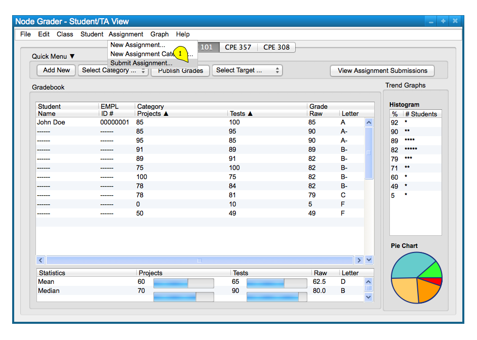
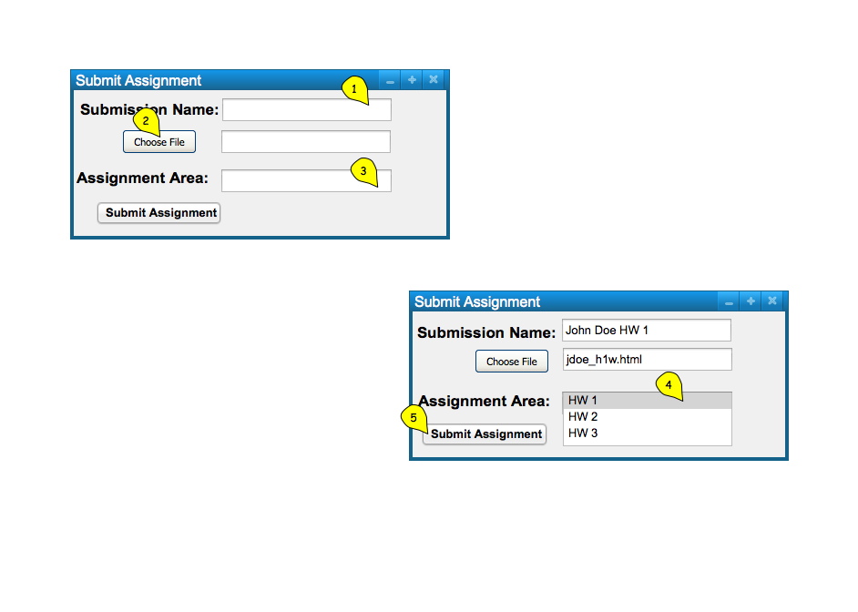
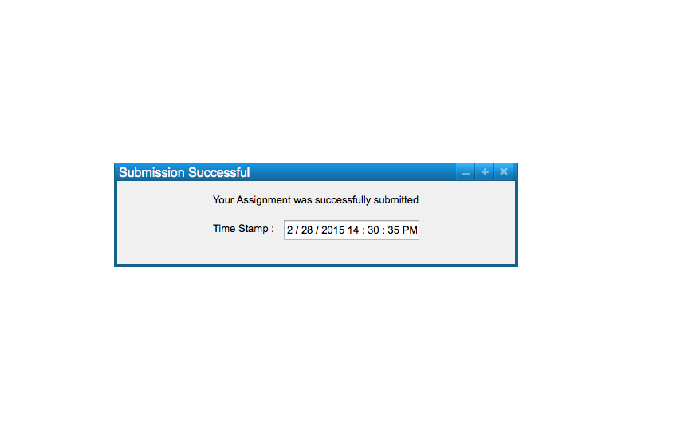

To submit an assignment, the user chooses the 'Assignment' menu
command. A list of file options will appear and the user chooses
'Submit Assignment' from the list of items to submit an assignment; this will take
the form of the following, Figure 1.

Figure 1: Submit Assignment path.
Figure 2 shows the response to the users selection of the 'Assignment Submit Assignment' command.

Figure 2: Submit Assignment dialog.
The figure shows a dialog box for submitting an assignment. The dialog box only takes in a submission name in a text box, and an input box for the assingnment to submit to. The choose file button will pull up the user's explorer/finder tool to select a file on their local system. It can be confirmed with the 'Submit Assignment' button below. Confirming the category will create a new category in the spreadsheet.
When the user selects the 'Submit Assignment' button, the system
displays a confirmation window as shown in Figure 3.

Figure 3: Submission Successful